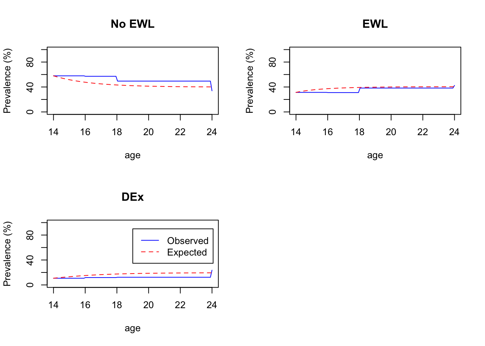

Chapter 6 Exercise Over Time
Below, we examine shifts in exercise for weight loss and driven exercise over time:
The first plot shows exercise status at ages 14-24 years in girls and boys, as a percentage of the total number of boys and girls. Total numbers of boys and girls differ across timepoints in this graph, and we show raw percentages within timepoint.

Overall, it appears that percentage of males and female in the three exercise groups is relatively stable from ages 14-18, with a possible increase in exercise for weight loss at age 18 among girls, and a more substantive increase in exercise for weight loss among men at age 24 and an increase in driven exercise across gender at age 24.
6.1 Transition in Exercise Status over Time
In the next two graphs, we examine transitions over time amongst the subset of girls (N = 1169) and boys (N = 568) who completed all assessments, ages 14-24. Transition plot code derived from Cernat (2021).

6.2 Multi-state Model
A multi-state model to panel data relies on a Markov assumption, that future evelolution only depends on the current state.
The likelihood for this basic model, used in msm, is calculated from the transition probability matrix \(P(u; t + u)\). The \((r, s)\) entry of \(P(u; t + u)\), \(prs(u; t + u)\), is the probability of being in state s at a time t + u, given the state at time u is r.
Sampling times are ignorable if they are fixed in advance, or otherwise chosen independently of the outcome of the process
The subject id variable does not need to be numeric, but observations from the same subject must be adjacent in the dataset, and observations must be ordered by time within subjects
Below is the state table for exercise group, indicating transitions between each state. Transitions from ‘no exercise for weight loss’ to ‘driven exercise’ appear to be the least common of all transitions, wtih 164 instances of this transition.
## to
## from 1 2 3
## 1 2098 1003 323
## 2 617 1025 395
## 3 182 276 233
| HR | L | U | |
|---|---|---|---|
| No EWL - EWL | 1.05 | 0.94 | 1.18 |
| EWL - No EWL | 0.95 | 0.82 | 1.11 |
| EWL - DEx | 0.98 | 0.80 | 1.20 |
| DEx - EWL | 0.94 | 0.75 | 1.18 |
| HR | L | U | |
|---|---|---|---|
| No EWL - EWL | 1.28 | 1.06 | 1.54 |
| EWL - No EWL | 1.41 | 1.10 | 1.80 |
| EWL - DEx | 1.09 | 0.82 | 1.46 |
| DEx - EWL | 1.08 | 0.77 | 1.50 |
| HR | L | U | |
|---|---|---|---|
| No EWL - EWL | 1.42 | 1.28 | 1.58 |
| EWL - No EWL | 1.05 | 0.90 | 1.21 |
| EWL - DEx | 1.11 | 0.86 | 1.42 |
| DEx - EWL | 1.10 | 0.83 | 1.47 |
| HR | L | U | |
|---|---|---|---|
| No EWL - EWL | 1.01 | 0.91 | 1.12 |
| EWL - No EWL | 0.87 | 0.77 | 0.99 |
| EWL - DEx | 1.00 | 0.82 | 1.21 |
| DEx - EWL | 1.08 | 0.88 | 1.33 |
## [1] 2| HR | L | U | |
|---|---|---|---|
| No EWL - EWL | 1.448993 | 1.2741121 | 1.6478778 |
| EWL - No EWL | 1.823015 | 1.4946972 | 2.2234489 |
| EWL - DEx | 1.011553 | 0.8377693 | 1.2213869 |
| DEx - No EWL | 0.521117 | 0.3456080 | 0.7857543 |
| DEx - EWL | 1.101876 | 0.8633981 | 1.4062222 |
## to
## from 1 2 3
## 1 2444 454 199
## 2 275 222 94
## 3 114 44 50| HR | L | U | |
|---|---|---|---|
| No EWL - EWL | 1.19 | 1.02 | 1.39 |
| EWL - No EWL | 1.17 | 0.97 | 1.41 |
| EWL - DEx | 3.36 | 0.71 | 15.86 |
| DEx - EWL | 3.30 | 0.70 | 15.60 |
| HR | L | U | |
|---|---|---|---|
| No EWL - EWL | 1.91 | 1.65 | 2.21 |
| EWL - No EWL | 1.06 | 0.89 | 1.27 |
| EWL - DEx | 10.39 | 1.52 | 71.12 |
| DEx - EWL | 10.07 | 1.50 | 67.56 |
#Mixed Effects Models
6.3 Driven Exercise
6.3.1 Girls
| Model | term | estimate | std.error | 0.25 % | 99.75 % |
|---|---|---|---|---|---|
| Baseline Model | (Intercept) | 0.132 | 0.045 | 0.007 | 0.258 |
| Age Effect Model | (Intercept) | 0.093 | 0.057 | -0.066 | 0.253 |
| Age Effect Model | Age | 1.080 | 0.007 | 1.061 | 1.099 |
| Step 1 Covariates | (Intercept) | 0.079 | 0.124 | -0.269 | 0.427 |
| Step 1 Covariates | Age | 1.080 | 0.007 | 1.062 | 1.099 |
| Step 1 Covariates | Parent SES | 1.023 | 0.034 | 0.927 | 1.118 |
| Step 1 Covariates | BMI Z - Age 13 | 1.347 | 0.030 | 1.263 | 1.430 |
| Step 2 Covariates | (Intercept) | 0.061 | 0.125 | -0.290 | 0.411 |
| Step 2 Covariates | Age | 1.081 | 0.007 | 1.062 | 1.100 |
| Step 2 Covariates | Parent SES | 1.024 | 0.034 | 0.930 | 1.118 |
| Step 2 Covariates | BMI Z - Age 13 | 1.166 | 0.029 | 1.084 | 1.248 |
| Step 2 Covariates | Fear of Wt Gain - Age 14 | 1.625 | 0.044 | 1.502 | 1.747 |
| Step 2 Covariates | Body Satisifaction - Age 14 | 1.068 | 0.038 | 0.962 | 1.174 |
| Step 2 Covariates | Thin-ideal Internalization - Age 14 | 1.138 | 0.034 | 1.041 | 1.235 |
| Step 3 Age x Cov Interactions | (Intercept) | 0.055 | 0.131 | -0.314 | 0.424 |
| Step 3 Age x Cov Interactions | Age | 1.102 | 0.010 | 1.073 | 1.131 |
| Step 3 Age x Cov Interactions | Parent SES | 1.024 | 0.034 | 0.930 | 1.119 |
| Step 3 Age x Cov Interactions | BMI Z - Age 13 | 1.151 | 0.043 | 1.030 | 1.271 |
| Step 3 Age x Cov Interactions | Fear of Wt Gain - Age 14 | 1.784 | 0.057 | 1.623 | 1.945 |
| Step 3 Age x Cov Interactions | Body Satisifaction - Age 14 | 1.135 | 0.059 | 0.969 | 1.301 |
| Step 3 Age x Cov Interactions | Thin-ideal Internalization - Age 14 | 1.220 | 0.046 | 1.091 | 1.349 |
| Step 3 Age x Cov Interactions | Age x BMI (13) | 1.003 | 0.007 | 0.984 | 1.022 |
| Step 3 Age x Cov Interactions | Age x Fear of Wt Gain (14) | 0.979 | 0.009 | 0.954 | 1.005 |
| Step 3 Age x Cov Interactions | Age x Body Satisfaction (14) | 0.987 | 0.008 | 0.964 | 1.010 |
| Step 3 Age x Cov Interactions | Age x Thin-Ideal Internalization (14) | 0.985 | 0.007 | 0.965 | 1.004 |
| statistic | df1 | df2 | p.value | riv | |
|---|---|---|---|---|---|
| Baseline vs. Age Effects | 134.731 | 1 | 235.974 | 0.000 | 0.302 |
| Age vs. Step 1 Covariates | 43.955 | 2 | 212.241 | 0.000 | 0.635 |
| Step 1 vs. Step 2 Covariates | 54.874 | 3 | 233.182 | 0.000 | 0.881 |
| Step 2 vs. Age x Covariate Interactions | 4.432 | 4 | 488.628 | 0.002 | 0.596 |
6.3.2 Boys
| Model | term | estimate | std.error | 0.25 % | 99.75 % |
|---|---|---|---|---|---|
| Baseline Model | (Intercept) | 0.050 | 0.098 | -0.224 | 0.324 |
| Age Effect Model | (Intercept) | 0.032 | 0.121 | -0.309 | 0.372 |
| Age Effect Model | Age | 1.098 | 0.010 | 1.070 | 1.126 |
| Step 1 Covariates | (Intercept) | 0.032 | 0.229 | -0.613 | 0.676 |
| Step 1 Covariates | Age | 1.099 | 0.010 | 1.071 | 1.127 |
| Step 1 Covariates | Parent SES | 0.963 | 0.050 | 0.821 | 1.105 |
| Step 1 Covariates | BMI Z - Age 13 | 1.885 | 0.052 | 1.740 | 2.030 |
| Step 2 Covariates | (Intercept) | 0.028 | 0.228 | -0.613 | 0.670 |
| Step 2 Covariates | Age | 1.100 | 0.010 | 1.071 | 1.128 |
| Step 2 Covariates | Parent SES | 0.979 | 0.049 | 0.841 | 1.117 |
| Step 2 Covariates | BMI Z - Age 13 | 1.759 | 0.047 | 1.626 | 1.892 |
| Step 2 Covariates | Fear of Wt Gain - Age 14 | 1.852 | 0.090 | 1.599 | 2.106 |
| Step 2 Covariates | Body Satisifaction - Age 14 | 1.001 | 0.058 | 0.837 | 1.165 |
| Step 2 Covariates | Thin-ideal Internalization - Age 14 | 1.168 | 0.067 | 0.980 | 1.355 |
| Step 3 Age x Cov Interactions | (Intercept) | 0.026 | 0.224 | -0.604 | 0.656 |
| Step 3 Age x Cov Interactions | Age | 1.121 | 0.014 | 1.082 | 1.160 |
| Step 3 Age x Cov Interactions | Parent SES | 0.975 | 0.048 | 0.840 | 1.111 |
| Step 3 Age x Cov Interactions | BMI Z - Age 13 | 1.789 | 0.066 | 1.604 | 1.974 |
| Step 3 Age x Cov Interactions | Fear of Wt Gain - Age 14 | 2.261 | 0.107 | 1.961 | 2.560 |
| Step 3 Age x Cov Interactions | Body Satisifaction - Age 14 | 1.000 | 0.075 | 0.790 | 1.209 |
| Step 3 Age x Cov Interactions | Thin-ideal Internalization - Age 14 | 1.180 | 0.077 | 0.963 | 1.396 |
| Step 3 Age x Cov Interactions | Age x BMI (13) | 0.997 | 0.010 | 0.968 | 1.025 |
| Step 3 Age x Cov Interactions | Age x Fear of Wt Gain (14) | 0.956 | 0.017 | 0.907 | 1.005 |
| Step 3 Age x Cov Interactions | Age x Body Satisfaction (14) | 1.000 | 0.011 | 0.970 | 1.030 |
| Step 3 Age x Cov Interactions | Age x Thin-Ideal Internalization (14) | 0.997 | 0.010 | 0.970 | 1.025 |
| statistic | df1 | df2 | p.value | riv | |
|---|---|---|---|---|---|
| Baseline vs. Age Effects | 86.949 | 1 | 201.418 | 0.000 | 0.337 |
| Age vs. Step 1 Covariates | 80.459 | 2 | 153.396 | 0.000 | 0.853 |
| Step 1 vs. Step 2 Covariates | 17.101 | 3 | 142.191 | 0.000 | 1.543 |
| Step 2 vs. Age x Covariate Interactions | 2.077 | 4 | 555.176 | 0.082 | 0.532 |
6.4 Exercise for Weight Loss
We are utilizing the same approach to examine endorsement of exercise for weight loss over time in the sample, but use an ordinal model (clmm) .
https://rdrr.io/github/DaanNieboer/ordinalimputation/man/pooling.clmm.html